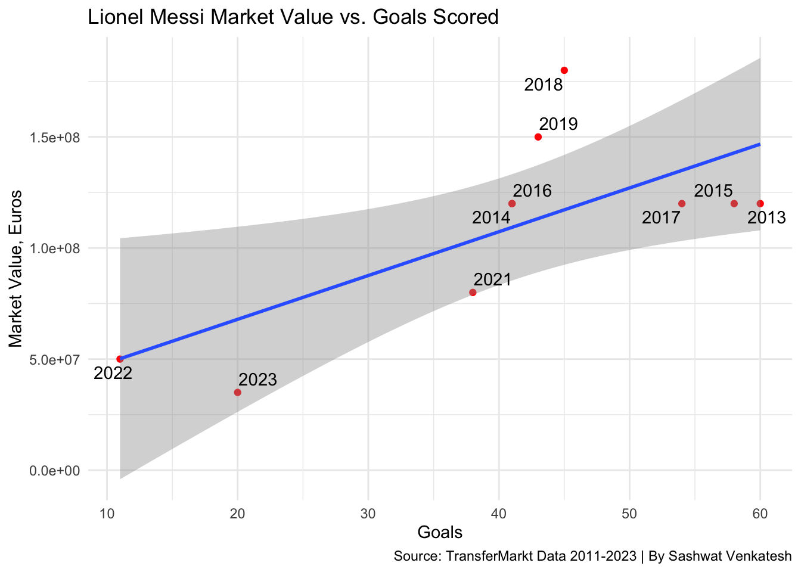
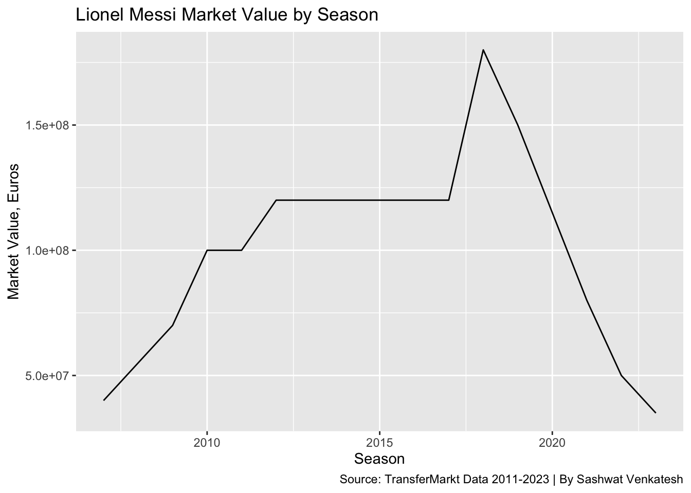
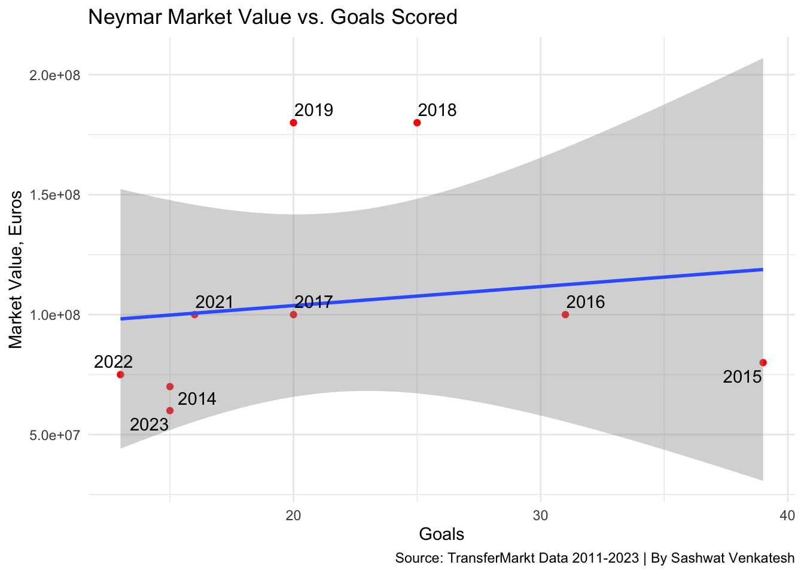
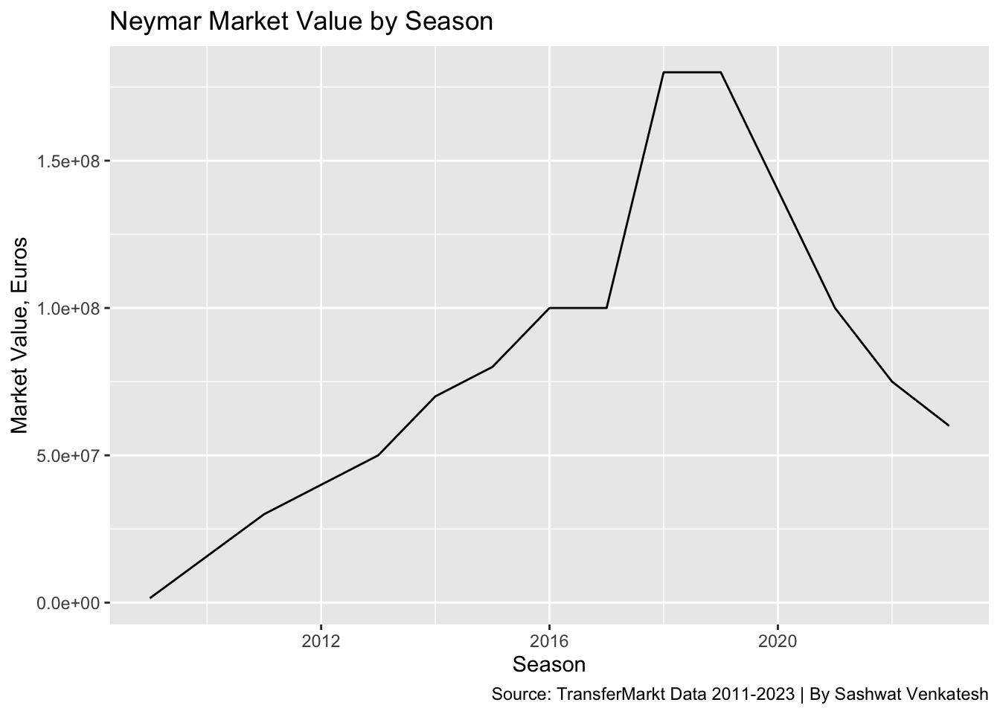

Soccer’s Biggest Steals and Scams: An Analysis of Transfer Business in Soccer Transfer Markets
news
Author
Sashwat Venkatesh
Published
October 31, 2023
Transfer business has become an absolutely integral part of any soccer club’s plans to contend for titles at a domestic, regional, or international level. In this analysis, I’ve delved into the most expensive transfers of all time, seeing if some big name players really warranted their transfers prices based on accepted market valuations, and officially listed fees, and seeing if there has ever been arbitrage in the player transfer market - a situation where a player was severely undervalued for what they produced.
From TransferMarkt, an online aggregator of statistics and valuations, we’ve gathered data on clubs, players, the valuations of players, EVERY game played, and the events within that game, such as bookings, goals, and substitutions, along with details on competitions around the world, games played by clubs, and individual player appearances.
This wide spread of data allows us to do a lot of analysis, which individuals across the internet have applied their data analytics skills to.
NOTE: The data was pulled from https://www.kaggle.com/datasets/davidcariboo/player-scores/data, which is a Kaggle repository that self-updates every week following the conclusion of matchweeks. My version of the data is from the first week of October. The aforementioned data analysis projects can be found in the “Code” tab at the Kaggle link provided.
Using the data, we’re actually able to extract players’ season by season data, finding out how many goals, assists, clean sheets, and any other values we want per season. I’ve limited this to the key statistics, which include goals, assists, clean sheets, yellow cards, red cards, and appearances.
valueGraph <-function(player) { temp <- player_valuations |>filter(player_id ==get_pid(player)) |>filter(format(date, "%m") =="05"|format(date, "%m") =="06"|format(date, "%m") =="07"|format(date, "%m") =="08") |>arrange(date)temp <- temp |>mutate(year = lubridate::year(date)) |># Create a new column with the yeargroup_by(year) |>filter(date ==max(date)) |>select(-year)ggplot() +geom_line(data=temp, aes(x=year, y=market_value_in_eur)) +ylab("Market Value, Euros") +xlab("Season") +labs(title=paste(player, "Market Value by Season") , caption="Source: TransferMarkt Data 2011-2023 | By Sashwat Venkatesh") }
Code
suppressMessages(goalsGraph("Lionel Messi"))
`geom_smooth()` using formula = 'y ~ x'

Code
suppressMessages(valueGraph("Lionel Messi"))

Looking at the values for Lionel Messi, we can call out a few things: First, his high scoring seasons seem to tilt the regression upwards, and since there are a lot of them, there may really be a “greatest of all time” tax. We can also resoanably state that Messi is probably past his peak on account of two factors.
Primarily, his goals production year-over-year has been decreasing, and his market valuations have been on a similar downturn since 2019. The end is likely(?) year for the 36 year old, who won his record-breaking 8th Ballon D’Or on Monday night.
Code
suppressMessages(goalsGraph("Neymar"))
`geom_smooth()` using formula = 'y ~ x'

Code
suppressMessages(valueGraph("Neymar"))

Looking at the pair of graphs tracking Neymar’s progress above, a couple of interesting points present themselves. It seems as though Neymar’s market value seems relatively untouched or unaffected by his statistical performance, in terms of goals. Neymar’s often been injured, and his impact has been minimized for this reason, but when he’s on the pitch, what he does in undoubted. This specific case shows us the power of narratives - that is, how much a player’s intangibles or uncountable statistics really contribute to their value. Most would tell you that Neymar is the epitome of this category, and it’s safe to say that crowd is probably right.
Looking at the pairs of graphs above, we can make some generalized conclusions and bucket players into some broad categories. Players like Kylian Mbappe, Jack Grealish, and Declan Rice are just entering their peaks, or are at least in the period of time where a player’s value baloons at the greatest rate. More “developed” players like Matthijs de Light, Lucas Hernandez, and Andre Onana seem to have found the spot in their careers where they are at their peak of market value and performance, and would almost certainly be shoe-ins to most, if not all, teams in the world.
Other players, like GKs Alisson, Kepa, as well as CB Harry Maguire, and Forwards Phillipe Coutinho and Antoine Griezmann are seemingly “past their prime” in terms of market value, but are mainstages in their teams at Liverpool, Real Madrid (on loan from Chelsea), Manchester United, Aston Villa, and Atletico Madrid, respectively.
While the above players were selected for a variety of reasons, the main reason was their status as the players who had the highest transfer fees at their respective general positions (F, M, D, G). Goals were used to estimate forwards’ production, while the sum of goals and assists were used to estimate the production value of midfielders. Clean sheets (a VERY rough statistic) were used to estimate the performance of defenders and goalkeepers.
Given the above conditions, however, there were some players I had to skip over. Enzo Fernandez(M, Chelsea) and Josko Gvardiol(D, Manchester City) were skipped due to a lack of season data in the TransferMarkt dataset. This is reasonable, since they are both now just playing their 3rd and 4th full seasons in major soccer leagues, and as such, their data was incredibly skewed. Joao Felix, a forward for FC Barcelona on loan from Atletico Madrid, was excluded despite being the 3rd highest transfer fee signing of all time due to a variety of injuries and loans that have hampered his playing time, despite having a handful of seasons under his belt. Wesley Fofana, a defender for Chelsea, was skipped for a similar reason, having only played 24 league games in the last 3 full seasons.